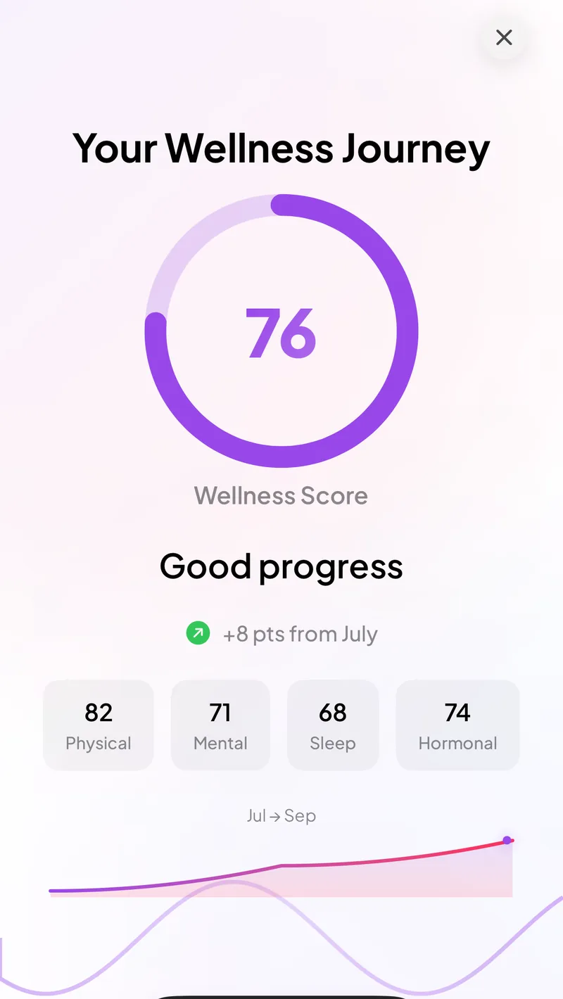

Go Go Gaia Health Wrapped Scores, Explained
Every quarter, Go Go Gaia builds you a Health Wrapped from your own tracked data: a physical score, a mental score, a sleep score, a hormonal score, and a whole-health score that puts them together. Here's what each one draws on, how often you get one, and what the numbers are and aren't telling you.
Quick Answer: What Is Health Wrapped?
Health Wrapped is a recap Go Go Gaia builds from your own logged and synced data. It scores four categories, physical, mental, sleep, and hormonal, and combines them into a whole-health score. Unlike most wellness apps, which save the recap for a single year-end release, Go Go Gaia builds one every quarter as well as a full year-in-review, so you see four recaps a year instead of one.
The scores are computed from whatever you've tracked, whether that's a 1-click log, a synced Apple Watch or Oura Ring, or the full spread of the app's 350+ trackable metrics. They're a reflection of your own tracked data patterns, not a medical assessment.
Educational content describing an app feature, not medical advice. Health Wrapped scores reflect tracked data patterns, not a diagnosis. For personal health concerns, please consult your doctor.

A Quarterly Wrapped screen: a whole-health score plus the four category scores it's built from.
Most "wrapped" features in health and fitness apps ship once a year. You wait until December, and you get a single retrospective built from twelve months of data, usually centered on one metric like steps or mood.
Go Go Gaia does this differently. It builds a Quarterly Wrapped at the end of every quarter, plus a full Yearly Wrapped, and it scores more than one thing. This page walks through what each score is built from, how the cadence works, and where the line sits between "this recaps your tracked data" and "this is medical advice" (it's always the former, never the latter).
A Recap Every Quarter, Not Just Once a Year
The cadence is the headline difference. A once-a-year wrapped means you find out how your fall went sometime the following December, long after the pattern would have been useful to notice. A quarterly cadence means you see a recap roughly every three months: once after Q1, again after Q2, again after Q3, and a fourth time with Q4, which Go Go Gaia also folds into a full year-in-review.
Each Quarterly Wrapped shows how many days you tracked, your longest logging streak, and how your physical, mental, sleep, and hormonal scores moved between the start and the end of that quarter. Rather than waiting for one big December snapshot, you get four smaller checkpoints spread across the year.
The Four Scores, Plus the Whole-Health Picture
Health Wrapped scores four categories separately, then rolls them into one whole-health score:
- Physical: built from what you've logged or synced around movement, workouts, and physical symptoms over the period.
- Mental: built from mood logs and any mental-health-adjacent tracking you've done, like stress or energy notes.
- Sleep: built from sleep you've logged manually or synced from a connected wearable.
- Hormonal: built from cycle tracking and hormone-related symptoms you've logged over the period.
The whole-health score sits above those four. It's the combined picture rather than a stand-in for any one of them. The point of scoring four categories separately, instead of collapsing everything into a single number from the start, is that a strong sleep score and a rough hormonal quarter can both be true at once, and Health Wrapped shows you both rather than averaging them into something that hides either one.
Where the Numbers Come From
Health Wrapped doesn't run on a separate data set. It's built from the same tracking you're already doing, or would be doing, inside the app: 1-click logs for quick entries, plus anything synced in from Apple Health, Apple Watch, Oura, Garmin, or other connected sources. Go Go Gaia tracks more than 350 metrics across cycle, mood, sleep, nutrition, symptoms, and fitness, and Health Wrapped draws on whichever of those you've actually used over the quarter or year being recapped.
That's also why two people's Wrapped can look very different even inside the same quarter. Someone who mostly logs cycle and mood data will get a hormonal and mental picture with more detail than their physical score. Someone syncing a wearable every night will see a fuller sleep and physical picture. The scores reflect the tracking you did, not a fixed formula applied evenly to every user. If you sync an Oura ring, it's worth knowing that Oura's own Cycle Insights and Readiness scores are a related but separate thing from your Health Wrapped hormonal score.
What the Scores Are, and What They're Not
It's worth being precise about this, because "score" is a word that carries a lot of weight. A Health Wrapped score is a reflection of the data patterns in your own logs and synced sources over a given period. It's descriptive, summarizing what you tracked, not diagnostic.
It isn't a medical assessment, a risk calculation, or a stand-in for how you actually feel. It doesn't come with a threshold that tells you a number is "bad" or a instruction for what to do about it. If a score moves in a direction that surprises you, that's a prompt to look at what you tracked that quarter, not a verdict on your health. For anything that concerns you, the right next step is the same as always: talk to your doctor, and bring the patterns you noticed if that's useful.
Whole Health, Not Just Mood
A lot of the "wrapped" interest in this category comes from mood-recap features, the kind that show you your happiest month or your most common emotion of the year. Those are useful for what they are: a look at how you felt.
Health Wrapped is built around a different framing: the whole picture, not just mood. Mood is one of the four categories it scores, sitting inside the mental score, but it's shown alongside sleep, physical activity, and hormonal patterns rather than standing alone. If you're comparing wrapped-style features and specifically want a mood-only recap versus something broader, we compared a few mood-tracking apps and their recap features, including how a whole-health approach differs from a mood-only one.
The Short Version
- Health Wrapped ships quarterly (four times a year) plus a full Yearly Wrapped, not just once in December.
- It scores physical, mental, sleep, and hormonal health separately, then combines them into a whole-health score.
- Every score is computed from your own logged and synced data, whether that's 1-click entries, a wearable, or both, across the app's 350+ trackable metrics.
- Scores describe tracked data patterns. They're not a diagnosis, a risk score, or medical advice.
If your own data comes from a mix of wearables, manual logs, and even the occasional lab PDF, we compared apps that pull that kind of data together against your cycle phase, which is the same underlying data pool Health Wrapped draws its scores from.
Frequently Asked Questions
Descriptive information about the Health Wrapped feature. Not medical advice. For personal concerns, please consult your doctor.
What is Go Go Gaia Health Wrapped?
Health Wrapped is a recap built from your own logged and synced health data. It scores four areas, physical, mental, sleep, and hormonal, and combines them into a whole-health score. It's built from whatever you've tracked, whether that's 1-click logs, synced wearable data, or both.
How often do you get Health Wrapped?
Every quarter, plus a full year-in-review. Go Go Gaia builds a Quarterly Wrapped at the end of each quarter and a Yearly Wrapped at the end of the year, so you get four recaps a year instead of waiting for one in December.
What does Health Wrapped actually score?
Four category scores, physical, mental, sleep, and hormonal, plus a whole-health score that reflects all four together. Each score is computed from the metrics you've logged or synced in that category over the period being recapped.
Is a Health Wrapped score a medical assessment?
A Health Wrapped score is a reflection of the data patterns you tracked over a quarter or year, not a diagnosis, a risk assessment, or medical guidance. It describes what your own logs and synced data show, and it's meant to be read alongside how you actually feel, not instead of it.
How is Health Wrapped different from a mood-only wrapped?
A mood-only recap shows one signal: how you felt. Health Wrapped puts mood in context with sleep, cycle, symptoms, and physical activity, then scores physical, mental, sleep, and hormonal health together. The idea is the whole picture, not just mood.
What data does Health Wrapped use?
Whatever you've logged or synced. Go Go Gaia tracks over 350 metrics across cycle, mood, sleep, nutrition, symptoms, and fitness, and it can pull in data from Apple Health, Apple Watch, Oura, Garmin, and other connected sources. Health Wrapped draws on that same pool of data for the period it's recapping.
Do I need a wearable to get a Health Wrapped?
Health Wrapped works from whatever you've tracked, whether that's 1-click manual logs, synced wearable data, or a mix of both. A wearable adds more data points to work with, but it isn't required.
Health Wrapped needs a quarter of data to have something to show you.
The more you log or sync between now and the end of this quarter, the more your first Quarterly Wrapped will have to work with. See the full breakdown on the Health Wrapped page.
Start Tracking Toward This Quarter's WrappedQuarters end every three months, so the next Wrapped is never far off.
Related Reading
My Mood Wrapped Alternatives: 4 Apps Compared
How a mood-only recap compares to a whole-health one, with four apps compared on logging, recaps, and price.
How Wearables Detect Your Cycle: The Tech Explained
The temperature, HRV, and heart rate signals wearables read, which are some of the same data streams Health Wrapped's physical and hormonal scores draw on.
Apple Watch vs Oura vs Garmin: Which Wins for Cycle Tracking?
Which wearable to pick if you want more synced data feeding into your physical, sleep, and hormonal scores.
Apps That Pull All Your Health Data Into One Place
Comparing apps that consolidate wearable data, manual logs, and lab results, the same data pool a whole-health score is built from.